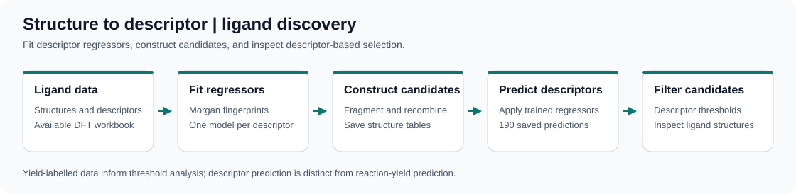

Molecular generation · Author implementation
VECTOR+
Property-guided contrastive representation learning combined with latent sampling and a molecular decoder. The public author repository accompanies our paper on low-data molecular design.
Code & projects
Public implementations and project resources for molecular generation and chemical machine learning.
Molecular generation · Author implementation
Property-guided contrastive representation learning combined with latent sampling and a molecular decoder. The public author repository accompanies our paper on low-data molecular design.
Catalysis · Molecular descriptors & ligand design
Research notebooks, descriptor tables, and candidate structures for phosphine-ligand discovery. The workflow includes descriptor regression, fragment recombination, and descriptor-based filtering.
